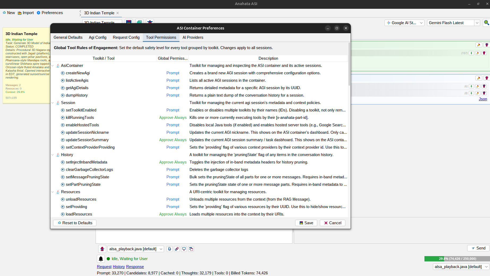
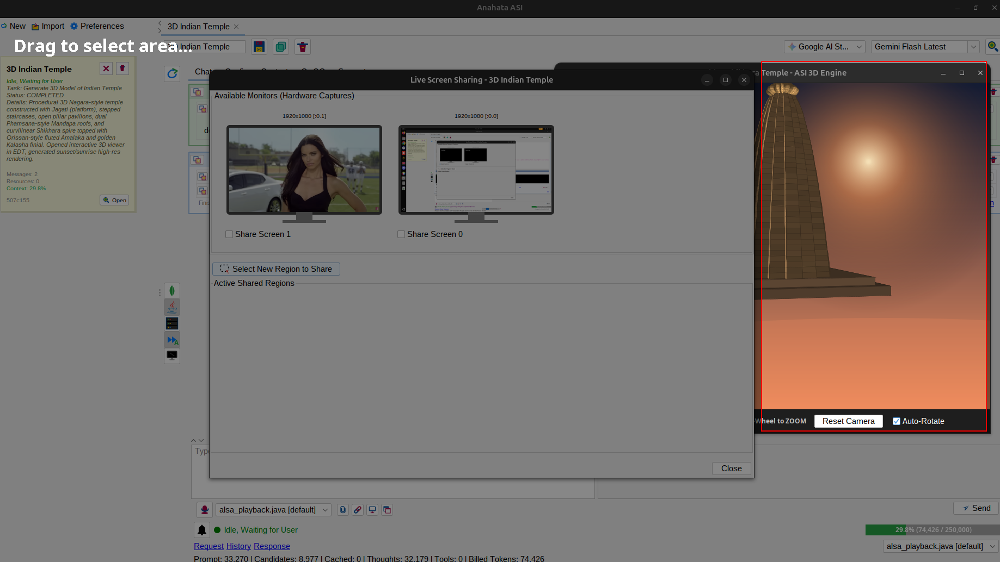

National Security Grade
Defense applications require total isolation from public cloud routers and zero dependency on commercial cloud gateways. Anahata ASI can operate as a self-contained local Java bytecode container, delivering peak tactical intelligence without any internet egress.
Zero External Telemetry
Anahata's fully audited, open-source codebase guarantees that not a single byte of telemetry is generated or routed out of your secure physical facility.
Offline Model Sovereignty
Binds natively to local model servers via localhost loopback, compatible with private, air-gapped weights including Llama 4 Scout, DeepSeek V4 Pro, and GLM-5.1.
Human-In-The-Loop Gate
Destructive OS calls and system modifications are securely gated behind the deterministic Human-In-The-Loop (HITL) approval system, preventing unauthorized automated actions.
Immutable Flight Logs
Binary Kryo state passivation acts as a secure, unalterable flight recorder, writing active session object graphs directly to disk on every turn for complete compliance auditability.
Air-Gapped Isolation
All tool executions, sensory RAG parsing, and model requests remain within physical, on-premises server racks. Connect directly to locally hosted open-weight models (Llama-3.3, DeepSeek-V4 Pro, Kimi K2.6, GLM-5.1) over a secure localhost loopback.

Programmatically isolate the model's reach. Dictate exact Prompt, Always, or Never policies for all 148 tools.

Share specific, coordinate-stable coordinates of physical screens or target windows with the ASI's vision system.
JVM Execution Safety
Unlike fragile Python or Node.js runtimes which are highly vulnerable to prompt injection exploits (e.g. executing destructive shell commands), Anahata relies on compiled Java methods and explicit tool definitions. Dynamic agentic code is executed via isolated classloaders, and system-level modifications are strictly locked down by the Human-In-The-Loop approval gate.
Procurement & Custom Toolkits
We build highly secure, custom Java toolkits and context providers tailored for classified networks, tactical databases, and legacy intelligence registries.